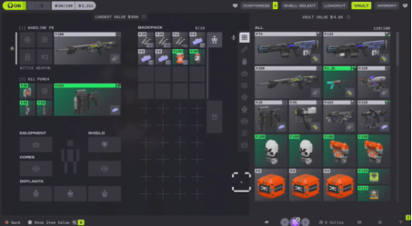
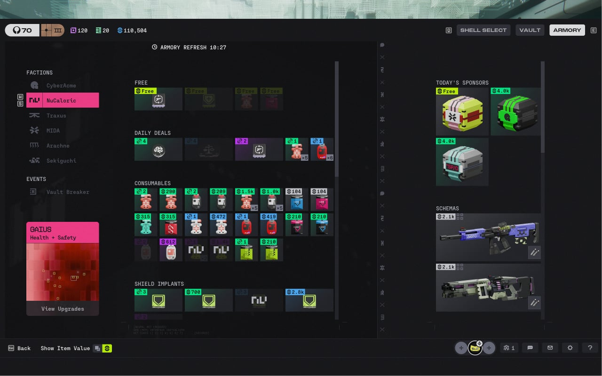

Màn hình chia tách rõ ràng giữa bên trái là các ô trang bị trên cơ thể Runner (2 ô Vũ khí, ô Giáp Shield, các ô gắn Lõi nâng cấp Cores/Implants), ở giữa là Balo mang theo (Backpack), và bên phải là Kho lưu trữ tổng (Vault) hoặc danh mục hàng hóa của Armory.
Cách tổ chức thông tin tại Armory ưu tiên "cốt truyện" (lore) hơn trải nghiệm. Thay vì phân loại theo chức năng quen thuộc (Vũ khí, Đạn, Phụ kiện), game lại phân loại hàng hóa theo "Phe phái" (như Traxus, NuCaloric, Cyber Acme).
⚠ Đánh giá UX: Đây vừa là tính độc bản của trò chơi khi không tuân theo lối cũ, vừa là sự khó khăn khi những người chơi thuộc tệp Bắn súng FPS khó làm quen với danh mục và loại hàng để mua.
Gồm 2 ô Vũ khí, ô Giáp Shield và các ô gắn Lõi nâng cấp (Cores/Implants) trực tiếp trên Runner.
Không gian chứa đồ dã chiến, vật phẩm cứu thương, đạn dược và chiến lợi phẩm trong trận.
Kho lưu trữ tổng của tài khoản và danh mục hàng hóa phân loại theo phe phái (Traxus, NuCaloric, Cyber Acme).

Khi bấm vào chi tiết một khẩu súng, màn hình chuyển sang không gian kiểm tra 3D. Bảng thông số kỹ thuật góc dưới dùng font PP Fraktion Mono hiển thị sự thay đổi chỉ số (tăng/giảm bằng màu xanh/đỏ) ngay khi người chơi di chuột qua từng linh kiện.
Xoay, phóng đại và quan sát trực quan từng bộ phận cơ khí trên vũ khí.
Bảng thông số kỹ thuật mang phong cách bảng điều khiển quân sự tương lai.
Chỉ số tự động đổi màu xanh (tăng) hoặc đỏ (giảm) khi rê chuột qua các tùy chọn linh kiện.
Mỗi ô vật phẩm trong hòm đồ được gán một mảng màu nền hoặc viền có độ tương phản cao, đại diện cho 6 cấp độ giá trị:
Vật phẩm cơ bản, phổ biến rộng rãi trong các khu vực đầu trận.
Vật phẩm nâng cao với các chỉ số cải thiện so với bản tiêu chuẩn.
Trang bị cấp trung, độ bền và hiệu năng ổn định trong giao tranh.
Trang bị hiếm, sở hữu các thông số vượt trội và hiệu ứng hỗ trợ đặc biệt.
Trang bị cấp cao nhất, thường gắn liền với các phòng khóa bảo mật cao.
Vật phẩm lậu hoặc nhiệm vụ đặc biệt đi kèm rủi ro cực cao khi vận chuyển.
Khi mở một thùng đồ (Loot Container) hoặc lục soát xác của Runner khác giữa lúc đang có nguy cơ bị tập kích, người chơi chỉ mất khoảng 0.2 đến 0.5 giây quét mắt qua màu sắc và hình khối icon để quyết định vật phẩm nào cần ưu tiên nhặt vào balo, giảm thiểu thời gian đứng yên trên chiến trường.
